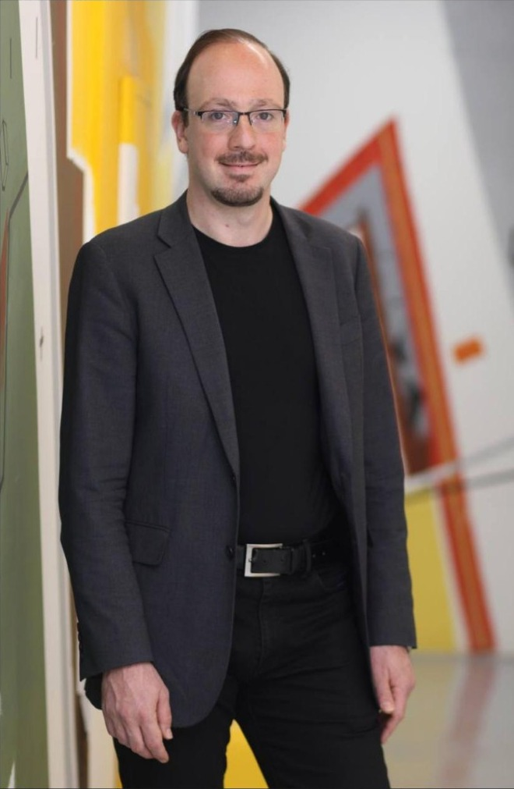

Dr. Alex Desatnik
Dr. Alex Desatnik is a highly accomplished Clinical Psychologist, Consultant, and Senior Researcher based in London, UK. With over two decades of experience, he is recognized for his expertise in Mentalization-Based Therapy (MBT), adolescent mental health, and parent-child interventions. Dr. Desatnik bridges the gap between cutting-edge academic research and practical clinical application, working with families, educational institutions, and corporate organizations worldwide.
Professional Credentials & Affiliations
- Clinical Psychologist & Psychotherapist — Private practice and international clinical consulting.
- Senior Researcher & Academic — Collaborator with leading global institutions, including University College London (UCL) and the Anna Freud National Centre for Children and Families.
- Certified MBT Practitioner & Trainer — Specialist in Mentalization-Based Therapy for adolescents (MBT-A) and families (MBT-F) since 2008.
- Organizational Consultant & Executive Coach — Advisor to corporate leaders, applying psychological principles to team dynamics and leadership development.